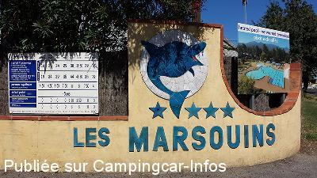
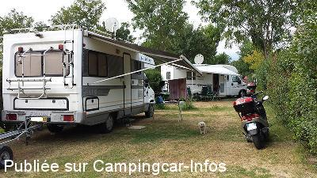
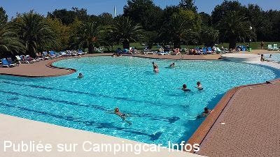

ACS = Aire de services sur camping acceptant le passage pour les services de :
ARGELÈS SUR MER
(N° 251)
Accès/adresse :
Avenue de la Retirada
Camping les Marsouins ****
66700 ARGELÈS SUR MER
Camping les Marsouins ****
66700 ARGELÈS SUR MER
Latitude : (Nord) 42.56369° Décimaux ou 42° 33′ 49′′
Longitude : (Est) 3.03471° Décimaux ou 3° 2′ 4′′
Tarif : 2014
C-C, 2 personnes, électricité : 16 à 39,50 €
Personne en + : 4,50 à 7,50 €
Chien : 3 €
Wifi gratuite
Services C-C de passage : 5 €
Type de borne : Plateforme
Services :


Piscine chauffée
Lave-linge
Restaurant Bar
Autres informations :
Ouvert du 14/04 au 21/09
Tel : +33(0)468 811 481
http://www.campsud.com/

Le 09/09/2013 par Jeff13800

Le 09/09/2013 par Jeff13800

Le 09/09/2013 par Jeff13800
de
Jeff13800
le 09/09/2013 :
Nous y avons passé 4 nuits début septembre 2013.
Que du bonheur ! Pas de monde, calme assuré, piscine "olympique" parcelle 92m2 verte, électricité, sanitaires propres.
Un magasin Proxy, un snack-pizza bar.
Et cela pour 16 euros...
Nous y avons passé 4 nuits début septembre 2013.
Que du bonheur ! Pas de monde, calme assuré, piscine "olympique" parcelle 92m2 verte, électricité, sanitaires propres.
Un magasin Proxy, un snack-pizza bar.
Et cela pour 16 euros...